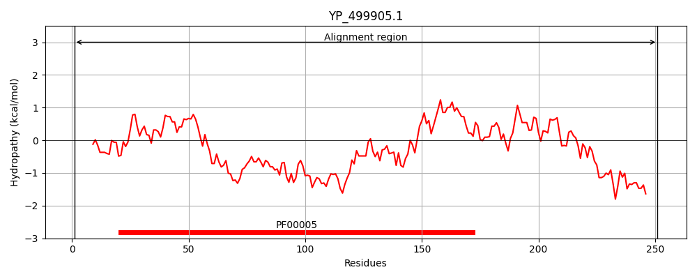
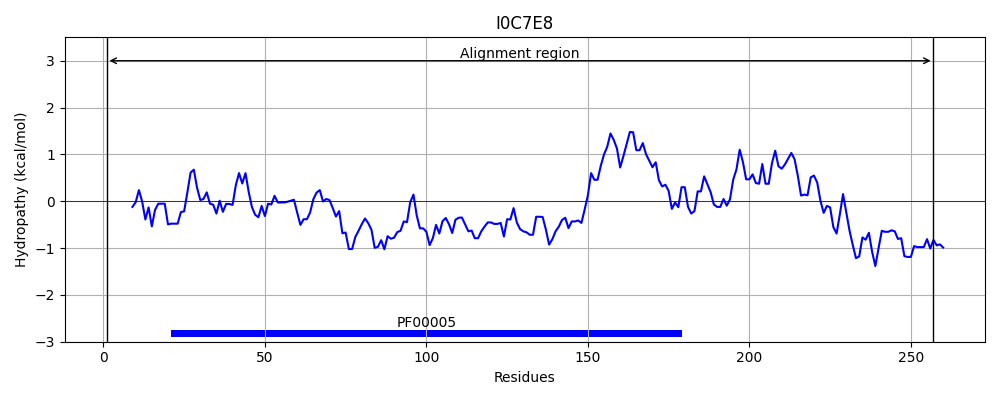
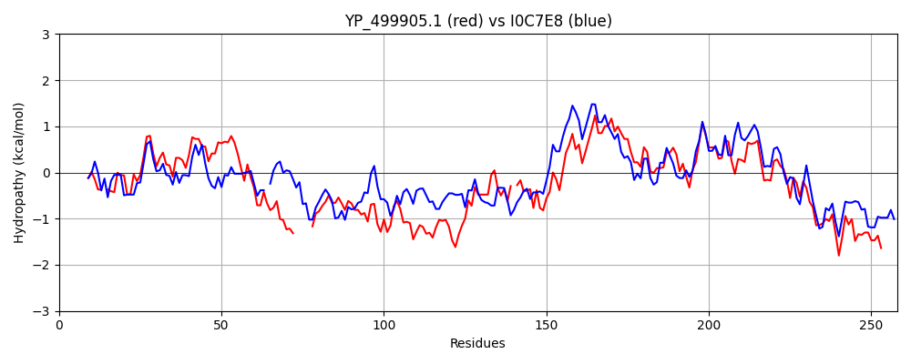

Hit Accession: I0C7E8
Hit TCID: 3.A.1.5.33
Hit Description: gnl|BL_ORD_ID|5219 gnl|TC-DB|I0C7E8|3.A.1.5.33 NikD OS=Staphylococcus aureus subsp. aureus 71193 GN=ST398NM01_2514 PE=3 SV=1
Mach Len: 258
e:0.000000
Query TMS Count : 0
Hit TMS Count: 0
TMS-Overlap Score: 0.000000
Predicted Substrates:CHEBI:25517;nickel(2+)
BLAST Alignment:
Score: 326 , Bit scores: 130 bits, E-value: 1.3e-36, Alignment length: 258, Percentage identity: 31
Query: 1 MSLIDIQNLTIKNT-SEKSLIKGIDLKIFSQQINALIGESGAGKSLIAKALLEYLPFDLSCTYDSYQFDGENV-----SRLSQYYGHTIGYISQNYAESFNDHTKLGKQLTAIYRKHYKGSKEEALSKVDKALSWVNLQS-KDILNKYSFQLSGGQLERVYIASVLMLEPKLIIADEPVASLDALNGNQVMDLLQHIVLEHGQTLFIITHNLSHVLKYCQYIYVLKEGQIIERGNINHFKYEHLHPYTERLIKYRTQL 251
M+L+ +++LTI +T +++ L+ ++ + + +IGESG+GKS+ K+++ P L T D FDG ++ S+L +Y G I + Q + +F+ T +GKQ+ + H S +E + + + +++L+ K IL Y + LSGG L+R+ IA L L+PKLIIADEP +LD + V++ I + I+H+L+ + K + V+K GQ+IE G + H YT+ L+ + ++
Sbjct: 1 MTLLTVKHLTITDTWTDQPLVSDVNFTLTKGETLGVIGESGSGKSITCKSIVGLNPERLRVTGD-ITFDGTSMLSLSESQLKKYRGKDIAMVMQQGSRAFDPSTTVGKQMFETMKVHTSMSTQEIEKTLIEYMDYLSLKDPKRILKSYPYMLSGGMLQRLMIALALALKPKLIIADEPTTALDTITQYDVLEAFIDIKKHFDCAMIFISHDLTVINKIADRVVVMKNGQLIEHGTRESVLHHPEHVYTKYLLSTKKKI 257 | Protein Hydropathy Plots: |
|---|
|  |  |
Pairwise Alignment-Hydropathy Plot:
|
|---|
|  |